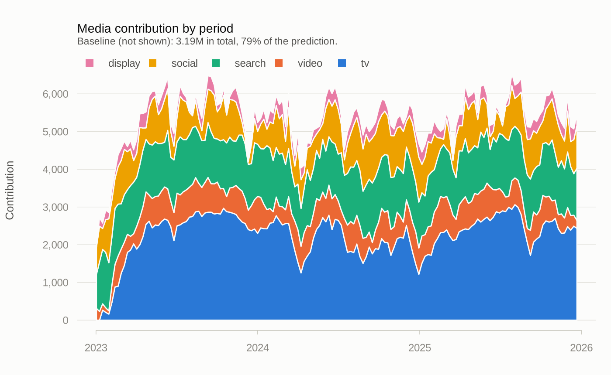
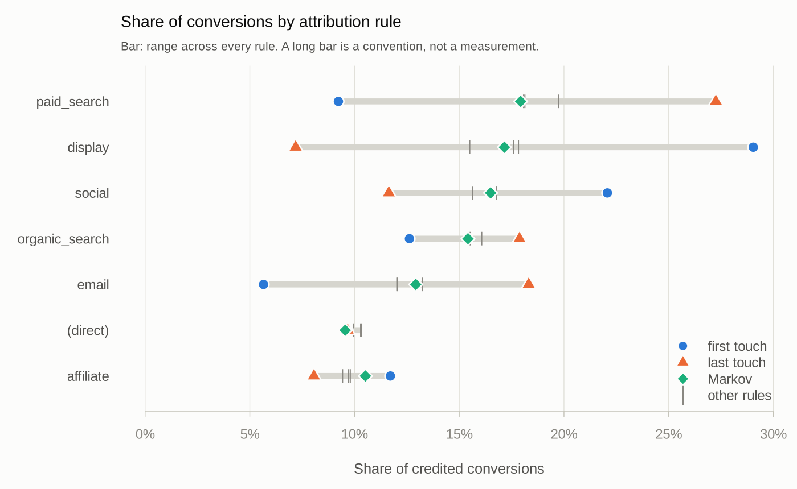

Composable media transforms and attribution path construction for R.
mediamix turns raw marketing data into model-ready features: media spend into carryover- and saturation-adjusted regressors, and raw event logs into attributed customer journeys.
Use it if you fit your own marketing mix model, whether in lm(), glmnet, brms, Stan or a tidymodels workflow, or if you need customer journeys and attribution built from a raw event log.
It is a preprocessing, feature-engineering and reporting package, not a modelling engine. lm(), glmnet and brms fit models better than a marketing package would, and tune does hyperparameter search properly. mediamix does the steps in front of the model and the decomposition after it, with the methodological details that usually get skipped written into the API.
Documentation, walkthroughs and worked examples are on the package website, https://elkronos.github.io/mediamix/.
What it offers
The full MMM frameworks (Robyn in R; Meridian and PyMC-Marketing in Python) bundle transforms, a model, an optimiser and reporting into one pipeline. mediamix provides those pieces separately, for use around a model you choose:
-
step_adstock()carries filter state across the train/test boundary, so carryover, saturation and a model penalty can be tuned jointly in onetune_bayes()call with no rows lost. -
marginal_roi()re-runs the whole transform on a 1% larger budget, the definition used by Jin et al. (2017) and by Meridian. The common shortcut, a curve’s slope times the kernel’s first weight, understates slow channels several-fold. -
allocate_budget()splits a budget across channels to maximise the media response a fitted model predicts, rescaling each channel’s series so its flighting is kept. It compares every spend level of every channel on a grid, so an S-shaped channel that returns little on its first increments is not left unfunded.simulate_plan()andreallocate()test a single move through the same curves. -
tune_carryover()and, for every channel at once inside one model with controls,tune_carryover_joint()score candidates on held-out KPI with forward-only resampling and report the one-standard-error choice alongside the minimum. -
block_bootstrap()resamples runs of weeks to put intervals on ROI, marginal ROI or anything else you compute. -
build_paths()turns a raw event log into journeys with every construction choice an argument, and accounts for the conversions that filtering leaves unattributable. -
attribute()runs five rule-based credit schemes and an order-1 Markov removal-effect model side by side, andattribution_spread()reports how much the answer depends on the choice. -
decay_from_half_life()andhalf_life()translate between a decay coefficient and the half-life practitioners talk in, andeffective_window()gives the number of periods that hold 90% of the effect; both halves of the package use this one vocabulary.
Scope
| In | Out | Because |
|---|---|---|
| Adstock and saturation transforms | Model fitting |
lm, glmnet, brms already exist |
| Carryover selection by cross-validation | Bespoke hyperparameter optimisers |
tune does this properly |
| Journey construction from event logs | Higher-order Markov chains |
ChannelAttribution does them in C++ |
| Rule-based credit and order-1 Markov removal effects | Causal incrementality | Requires experiments, not logs |
| Contribution, ROI, counterfactual marginal ROI and budget allocation | Allocation under parameter uncertainty |
allocate_budget() takes point estimates; block_bootstrap() measures how far they move |
| Media data diagnostics | Generic regression diagnostics |
broom, performance
|
as_channel_paths() exports journeys straight into ChannelAttribution’s format, for higher-order models and very large path tables.
Installation
mediamix is not yet on CRAN. Install the development version from GitHub:
# install.packages("pak")
pak::pak("elkronos/mediamix")pak does not build vignettes for packages installed from GitHub, so vignette("carryover") and the others are not available after this install. Read them on the package website, or install with remotes::install_github("elkronos/mediamix", build_vignettes = TRUE).
mediamix imports cli and rlang for its messages and data.table for the attribution half, where event logs get large. It has no compiled code. recipes, dials and the rest of tidymodels are in Suggests and registered conditionally, so the transforms work equally well from a Stan or brms workflow that will never touch them.
Example
Media mix modelling
mm_weekly holds three years of weekly spend on five channels, with price and revenue, for three geographies. It was simulated from known carryover and saturation parameters, kept in its "truth" attribute, so every estimate below can be checked. The example uses the north geography:
library(mediamix)
data(mm_weekly)
truth <- attr(mm_weekly, "truth")
north <- mm_weekly[mm_weekly$geo == "north", ]
channels <- c("tv", "video", "search", "social", "display")
controls <- data.frame(week = seq_len(nrow(north)), price = north$price,
seasonality = north$seasonality,
holiday = north$holiday)It is tempting to choose decay by asking which transformed series is best-behaved. That criterion has no dependent variable in it, so it ranks filters by how hard they smooth rather than by anything about the outcome. tune_carryover_joint() scores each candidate by how well a model with every channel and the controls predicts held-out revenue, so no channel is credited with another’s effect. The default model is ordinary least squares; fit_fn and predict_fn take any other.
joint <- tune_carryover_joint(north[channels], north$revenue,
controls = controls)
rbind(estimate = joint$best$decay, truth = truth$decay[channels])
#> tv video search social display
#> estimate 0.80 0.5 0.65 0.55 0.60
#> truth 0.85 0.7 0.15 0.45 0.55Of the five, video and search miss by more than 0.1. Search’s cross-validation profile is almost flat: the data does not identify its carryover, which plot(joint) makes visible and a bare point estimate would hide. Carryover is weakly identified in most real data, which is why the one-standard-error rule (Hastie, Tibshirani and Friedman, 2009) is reported alongside, as joint$best_1se.
The joint search does not tune saturation, so to keep the example short the model below uses the parameters mm_weekly was simulated from: geometric adstock (Broadbent, 1979) followed by a Hill curve (Hill, 1910), which media_transform() applies in that order. transform_plan() does the same for every channel of a plan, each with its own entry in spec. Any model can go on top; here it is lm() with the controls. contributions() splits the fitted revenue into one part per channel and a baseline, and roi() divides each channel’s contribution by its spend:
spec <- lapply(stats::setNames(channels, channels), function(ch) list(
adstock = list(decay = truth$decay[[ch]]),
saturation = list(half_max = truth$half_max[[ch]],
shape = truth$shape[[ch]])
))
media <- transform_plan(north, spec)[channels]
fit <- lm(north$revenue ~ ., data = cbind(media, controls))
contrib <- contributions(media, fit, index = north$date)
roi(contrib, north[channels])
#> channel contribution spend roi
#> 1 social 132709 36716 3.614
#> 2 search 208307 74560 2.794
#> 3 video 102461 53248 1.924
#> 4 display 40853 26937 1.517
#> 5 tv 349629 266978 1.310Every channel returns more than it costs on average. The main results have plot() methods in one consistent, colour-vision-checked style; here is the decomposition week by week:
plot(contrib)
Average ROI is a scorecard; marginal ROI is the decision variable. marginal_roi() computes it the way Jin et al. (2017) and Meridian define it, as the extra response from a 1% larger budget divided by the extra spend, by re-running carryover and saturation rather than differentiating a curve:
tv <- marginal_roi(north$tv, coefficient = coef(fit)[["tv"]],
adstock = list(decay = truth$decay[["tv"]]),
saturation = list(half_max = truth$half_max[["tv"]],
shape = truth$shape[["tv"]]))
tv
#> spend contribution roi mroi
#> 1 266978 349629 1.31 1.253Television’s next pound returns 1.25, close to its average of 1.31. The tempting shortcut, the curve’s slope times the kernel’s first weight, gives 0.21 for this channel: it counts only the week of spend and discards the 85% of the effect that arrives later.
block_bootstrap() puts intervals on any of these numbers. On mm_weekly they are wide, which is the point: see the budget walkthrough for how that changes a recommendation, and how its answer compares with the truth the data was simulated from.
Attribution
Attribution tools such as ChannelAttribution consume "a > b > c" strings with conversion counts attached; producing those strings is left to the analyst. That step usually ends up as a group_by() and a paste(collapse = " > "), and that loses a great deal.
On mm_events, the package’s 20,799-event synthetic log:
| journeys | mean length | |
|---|---|---|
| naive one-path-per-customer | 5,400 | 3.85 |
| split on conversion | 6,105 | 3.39 |
| + collapse consecutive duplicates | 6,105 | 2.83 |
The last row is build_paths() with its defaults: 13% more journeys than the first row, and 27% shorter. Journey counts and lengths feed a Markov transition matrix directly, so those are not rounding differences. Each of these choices is an argument to build_paths():
paths <- build_paths(
mm_events,
id = "customer_id", channel = "channel", timestamp = "timestamp",
conversion = "conversion", value = "value",
lookback = 30, # or read it off conversion_lag()
split_on = c("conversion", "gap"), gap = 30,
collapse_repeats = TRUE,
keep_null_paths = TRUE, # Markov removal effects need these
direct = "label"
)build_paths() handles the things that go wrong between an event log and a set of journeys: journey splitting, lookback windows, non-converting paths, direct, none and missing channels, consecutive duplicates, duplicate events, timestamps that do not parse, deterministic tie-breaking, and accounting for conversions that filtering leaves unattributable. Each is an argument, not an assumption.
Dropping direct traffic can strip a converting journey of every touchpoint it had. mediamix fixes the conversion facts before any filtering, so those conversions are counted and reported as conversions_unattributable rather than quietly shrinking the denominator.
Any single credit rule gives you a number. Several give you the range that number could have been. attribute() runs five heuristic rules and an order-1 Markov removal-effect model (Anderl et al., 2016). The four channels whose share varies most:
shares <- attribute(paths)
spread <- attribution_spread(shares)
head(spread, 4)
#> channel min_share max_share mean_share spread first_last_ratio
#> 1 display 0.07187 0.2904 0.1739 0.2185 4.0406
#> 2 paid_search 0.09230 0.2725 0.1840 0.1802 0.3387
#> 3 email 0.05655 0.1831 0.1237 0.1266 0.3088
#> 4 social 0.11638 0.2207 0.1657 0.1043 1.8966
plot(shares)
Display’s share runs from 7% to 29% depending only on the convention chosen. That channel has not been measured; it has been assigned a number. The Markov share falls inside the heuristic range for 6 of 7 channels here: a data-driven convention narrows the argument without ending it.
Rule-based attribution is a bookkeeping convention, not a causal estimate. It divides observed conversions among observed touchpoints by a rule you chose; it cannot tell you what would have happened if a channel had not run, because that outcome is not in the log. Only an experiment answers that.
Where to go next
From first steps to deeper material:
-
vignette("mediamix"): getting started, from raw data to contributions and ROI. - The budget walkthrough: one budget question from weekly spend to a recommendation, checked against the parameters the data was simulated from.
-
vignette("carryover"): choosing decay and lag by cross-validation, and why five correlated channels make it harder. -
vignette("tidymodels"): joint tuning of transform and model parameters, with recipe steps that carry adstock across the train/test boundary. -
vignette("journeys"): building journeys from event logs. -
vignette("spine"): carryover and credit are the same idea, the geometric kernel run forward from spend for adstock and backward from a conversion for time-decay credit. - Methods and references: the method behind each function and where it comes from.
- How mediamix relates to other tools: Robyn, Meridian, PyMC-Marketing and ChannelAttribution.
The walkthrough, the methods page and the comparison are on the website only; the vignettes also ship with the package.
References
Anderl, E., Becker, I., von Wangenheim, F. and Schumann, J. H. (2016). Mapping the customer journey: Lessons learned from graph-based online attribution modeling. International Journal of Research in Marketing, 33(3), 457–474. https://doi.org/10.1016/j.ijresmar.2016.03.001
Broadbent, S. (1979). One way TV advertisements work. Journal of the Market Research Society, 21(3), 139–166.
Hastie, T., Tibshirani, R. and Friedman, J. (2009). The Elements of Statistical Learning (2nd ed.). Springer. https://doi.org/10.1007/978-0-387-84858-7
Hill, A. V. (1910). The possible effects of the aggregation of the molecules of haemoglobin on its dissociation curves. The Journal of Physiology, 40, iv–vii. https://doi.org/10.1113/jphysiol.1910.sp001386
Jin, Y., Wang, Y., Sun, Y., Chan, D. and Koehler, J. (2017). Bayesian methods for media mix modeling with carryover and shape effects. Google Inc.